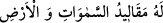
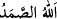

Şiirde icmal, lügaz (bilmece) ve tevriye bulunur. Yâni âyet: “Biz, Muhammed (s.a.)’e
hiçbir şeyi remzetmedik, bilmece şeklinde bildirmedik, bir şeyi murâd ettiğimiz halde
başka bir şekilde hitâb etmedik, mânâsını anlayamayacağı şekilde icmâlde bulunmadık”
demektir.
Bu konudan uzun uzun bahseden İbnü’l-Arabî’nin bu sözleri, sûre başlarındaki hurûf-i
mukataa bakımından bir problem doğurur mu? Muhtemelen o, bu harfleri
müteşâbihlerden saymıyor; ya da ona göre müteşâbihler Allah’ın bilgisini sadece
kendisine has kıldığı şeylerden değildir. İnsânü’l-uyûn’da böyle geçmektedir.
İbn Abbas (r.a.) der ki: “Elif. Lâm. Mim. Râ.”nın mânâsı “Ben, hiçbir kimsenin
bilmediği şeyleri bilen ve Arş’ın üstüyle toprağın altı arasında olup da kimsenin
görmediği her şeyi gören Allah’ım!” Bu mânâya göre “elif” ile “lâm”, zât-ı ilâhîye
delâlet eden “: Ben Allah’ım” ifadesinin kısaltmasıdır. “Mîm” ile “râ” ise ilâhî
sıfata delâlet eden “ (bilirim ve görürüm)” ifadesinin kısaltmasıdır.
Kâşifî ise şöyle der: “Elif” O’nun nimetleri, “lâm” O’nun sınırsız lütfu, “mim”
zevâli olmayan mülkü, “râ” ise kemâl üzere olan re’feti, esirgemesidir.” Buna göre, her
harf ilâhî sıfatlara delâlet eden kelimelerin kısaltması olmuş oluyor.
et-Tibyân’da da şöyle der: “Elif” Allah, “lâm” Cebrâil, “mim” Muhammed, “râ”
rasûller demektir. Mânâ şöyledir: ‘Ben, Cebrâil vâsıtasıyla Kur’an’ı Muhammed’e,
başka ilâhî kitapları ve rabbânî sahîfeleri de peygamberlere gönderen Allah’ım!’
Şeyhzâde ise şöyle diyor: “Öyle görünüyor ki “Elif lâm mim râ” ifadesi, müstakil
bir söz olup takdîri şöyledir: “Bu sûre, “Eif lâm mim râ” adlı sûredir.”
“Bunlar” yâni bu sûrenin âyetleri “Kitab’ın” yani Kur’an’ın “âyetleridir.”
et-Te’vîlâtü’n-Necmiyye’de şöyle denilir: “Bunlar” yani “Elif lâm mîm râ” harfleri
Kur’an’ın âyetleridir. “Elif” ile “ Allah ki O’ndan başka tanrı yoktur; O, hayydir, kayyûmdur.” (el-Bakara, 2/255)
âyetine, “lâm” ile “ Göklerin ve yerin anahtarları (mutlak
hükümranlığı) O’nundur.” (ez-Zümer, 39/63) âyetine, “mim” ile “ Ceza
gününün mâlikidir.” (el-Fatiha, 1/3) âyetine, “râ” ile de “ O,
göklerin ve yerin Rabbidir.” (es-Sâffât, 37/5) âyetine işâret edilmektedir.
Nitekim “kaf” harfi, “ De ki: O, Allah birdir.” (el-İhlâs, 112/1) âyetine
işârettir. Bu, taayyün-i evvelden ibâret olan ahadiyyet mertebesidir. “Sad” harfi “ Allah Samed’dir.” (el-İhlas, 112/2) âyetine işârettir. Bu ise, taayyün-i sânîden
ibâret olan samediyyet mertebesidir. “Saf saf dizilenlere yemin ederim.” (es-Sâffât,
32/1) âyeti ise ona tâbi olan taayyünlere işâret etmektedir.”
“Rabbinden sana indirilen” Kur’an, müşriklerin dediği gibi senin tarafından bâtıl bir
şey olarak ortaya konmuş olmayıp “haktır” Dolayısıyla ona inanmak ve ahkâmıyla amel
etmek gerekir. Allah’ın ipi olan bu Kur’ân’a kim sarılırsa, Kur’ân o kimseyi